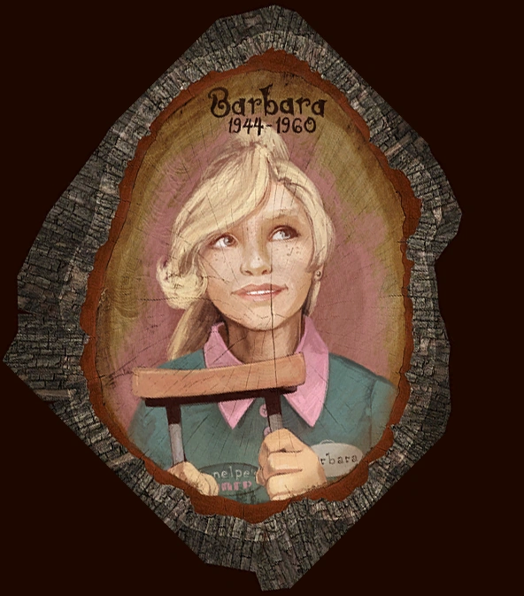
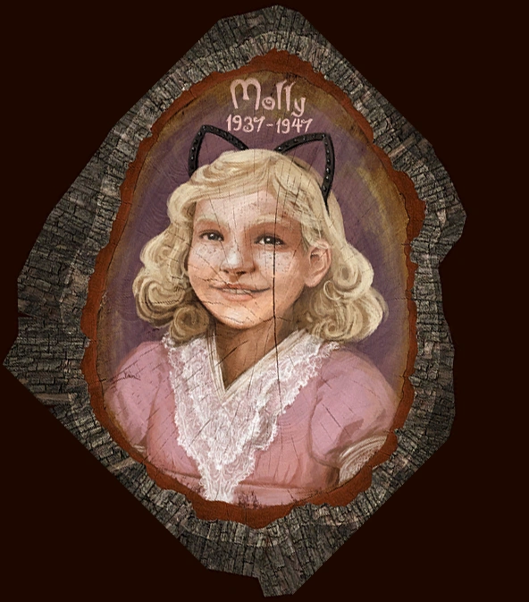
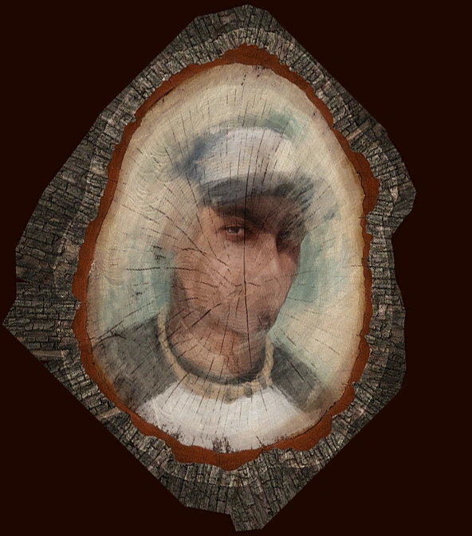

Barbra Finch
1944 - 1960

Overview
Barbara Finch, the daughter of Grandma Edie and a former child actress destined for fame, finds her tragic tale
explored through an engaging comic book and RPG-style gameplay. The narrative immerses players in the fateful
night of her mysterious disappearance, where her ear is the only trace left behind, discovered inside a music box.
The comic presents a chilling account, weaving a story about Halloween monsters and a "man with a hook," that
killed Barbra. Her boyfriend's abandoned crutch and fantastical nature create an eerie and unsettling retelling of
a morbid tragedy, blurring the lines of a supernatural fiction and grief ridden reality.
Common Bugs:
- Getting stuck at the fridge: when walking towards the fridge during the “old fridge rattled and grew still"
text, don’t hesitate and walk directly at the fridge, else risking that you might get stuck, only being able
to crouch. To get out just close and restart the game. This bug has not been patched specifically.
- Unable to use the crutch: After attaining Barbra’s boyfriend's crutch, some players couldn't swing the
crutch as it would clip through everything else. If the crutch is clipping through objects instead of hitting
them, lower your graphics settings, e.g: “ultra” to “low” for this section. After Barbras chapter you can
return the quality.
Molly finch
1937-1947

Portrait of Molly Finch
Overview
Molly is the daughter of great grandma Edie and Sven. After being sent to bed with no dinner, Molly scavenges for
food in her room and soon leaps out the window, turning into a cat to chase a bird. Catching a variety of prey,
she turns into an owl, a shark and finally a tentacle monster.
All of this is written in her diary on the day of her death. She then writes the tentacle monster is under bed, as
hungry as she was and ready to eat her.
This disturbing and surreal chapter sets the tone for the game, a morbid and oddly comforting yet uneasy game,
that offers a home full of warmth and life polluted by death and trauma.
Common Bugs:
- The sea monster: in the sea monster segment, players often freeze after eating the sailors, and especially
when going for extra achievements such as eating extra animals. The bug has not yet been patched. In order to
unfreeze, close and open the game. This will restart the molly chapter however.
Lewis Finch
1988-2010

Overview
Lewis worked at a cannery, but his daydreams—controlled by the mouse for reality and the keyboard for
imagination—gradually overtook his life. In these fantasies, he traveled through a labyrinth to Lewistopia, became
mayor, and conquered cities like New Lewisville and St. Lewis. He forgot to leave the cannery as his imagination
consumed his view, blurring the lines between reality and fantasy. He despised the cannery and saw his imaginary
self as the true Lewis, ultimately bowing his head to the guillotine in his imagined kingdom.
Common Bugs:
- The beginning at the cannery: This bug prevents you from picking up the fish in order to continue the
story. If you cannot pick up the fish, exit and restart the game.
- Stairs to the coronation: Towards the end of Lewis's minigame, Lewis walks up a flight of stairs to reicive
his crown in his fictiious mind. However, be careful to avoid walking into the guards as you ascend the stairs
as it will cause a collision bug, freezing the player. If this does happens, quit and reload the game. Note
that other players took multiple restarts for this segment to work. This bug had not been patched.